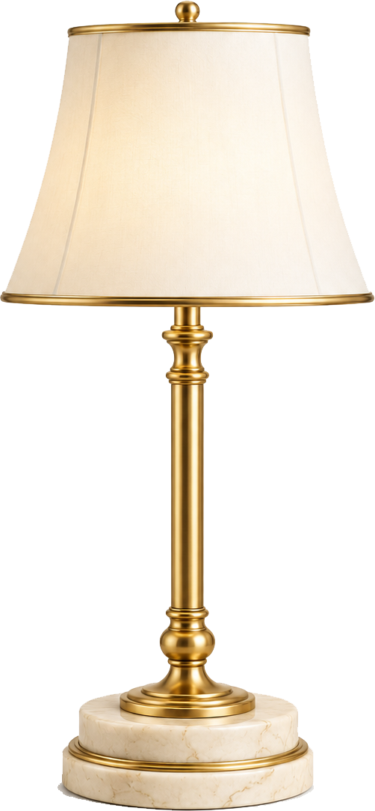
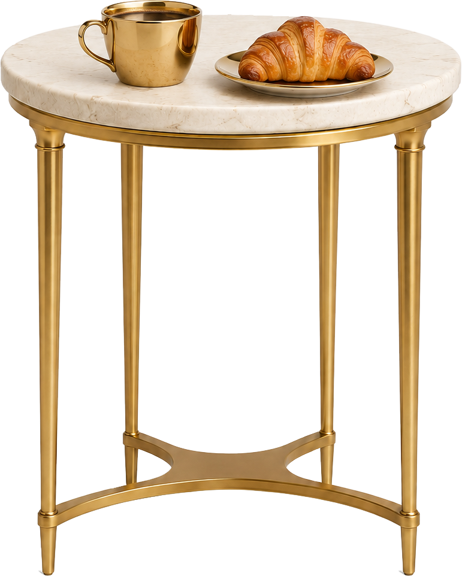

<!doctype html>
<html lang="he" dir="rtl">
<head>
<meta charset="utf-8">
<title>סטטוס אנימציה — אפרת כהן</title>
<!--
  תבנית סרטון סטטוס בשפת המותג של אפרת כהן.
  - פתיחה רגילה בדפדפן = תצוגה מקדימה בלופ (רווח = עצירה, חיצים = קפיצה של חצי שנייה).
  - scripts/render.mjs קורא ל-window.renderFrame(t) פריים אחרי פריים ומייצא MP4.
  כדי לבנות סרטון חדש: עורכים רק את מערך SCENES בתחתית הקובץ.
-->
<style>
  @font-face { font-family: 'Display'; src: url('fonts/Karantina-Bold.ttf'); font-weight: 700; }
  @font-face { font-family: 'Display'; src: url('fonts/Karantina-Regular.ttf'); font-weight: 400; }
  @font-face { font-family: 'Body'; src: url('fonts/Assistant-Light.ttf'); font-weight: 300; }
  @font-face { font-family: 'Body'; src: url('fonts/Assistant-Regular.ttf'); font-weight: 400; }
  @font-face { font-family: 'Body'; src: url('fonts/Assistant-SemiBold.ttf'); font-weight: 600; }
  @font-face { font-family: 'Body'; src: url('fonts/Assistant-ExtraBold.ttf'); font-weight: 800; }

  :root {
    /* פלטת המותג — נדגמה מקבצי הלוגו ופינות הסטטוס */
    --espresso: #2E2620;   /* רקע כהה ראשי */
    --brown:    #4E3C2E;   /* רקע כהה משני */
    --sand:     #D1C0B0;   /* רקע בהיר משני */
    --cream:    #F5E9DD;   /* רקע בהיר ראשי / טקסט על כהה */
    --gold:     #CEAB6C;   /* צבע המבטא — מחליף את הוורוד של הרפרנס */
    --gold-lt:  #E5CEAF;
    --gold-grad: linear-gradient(135deg, #A8854A 0%, #E8CFA0 45%, #CEAB6C 70%, #9C7A40 100%);
    --ink-dark: #2E2620;
  }
  html, body { margin: 0; background: #000; }
  body { display: flex; justify-content: center; align-items: flex-start; min-height: 100vh; }
  #stage {
    position: relative; width: 1080px; height: 1920px; overflow: hidden;
    background: var(--espresso); color: var(--cream);
    font-family: 'Body', sans-serif; transform-origin: top center;
  }
  .scene { position: absolute; inset: 0; display: none; overflow: hidden; }
  .center { position: absolute; inset: 0; display: flex; flex-direction: column; align-items: center; justify-content: center; text-align: center; }
  .top    { position: absolute; top: 230px; left: 80px; right: 80px; text-align: center; }

  /* טיפוגרפיה — Karantina (צר וגבוה, כמו "רגע של סטייל") לכותרות, Assistant לטקסט */
  .d1 { font-family: 'Display'; font-weight: 700; font-size: 300px; line-height: .86; letter-spacing: 1px; }
  .d2 { font-family: 'Display'; font-weight: 700; font-size: 200px; line-height: .9; }
  .d3 { font-family: 'Display'; font-weight: 700; font-size: 140px; line-height: .95; }
  .b1 { font-family: 'Body'; font-weight: 600; font-size: 64px; line-height: 1.2; }
  .b2 { font-family: 'Body'; font-weight: 400; font-size: 46px; line-height: 1.3; }
  .gold { color: var(--gold); }
  .gold-fill { background: var(--gold-grad); -webkit-background-clip: text; background-clip: text; color: transparent; }
  .on-light { color: var(--ink-dark); }

  /* מסכה לחשיפת שורה מלמטה */
  .mask { display: block; overflow: hidden; padding: 0 20px; }
  .mask > * { display: inline-block; will-change: transform; }

  /* לוגו בצבע חופשי: הקובץ משמש כמסכה והצבע מגיע מ-background */
  .logo-icon, .logo-full, .logo-word {
    display: inline-block; background: var(--gold-grad);
    -webkit-mask: var(--src) center / contain no-repeat; mask: var(--src) center / contain no-repeat;
  }
  .logo-icon { --src: url('brand/logo-icon.png'); width: 248px; height: 245px; }
  .logo-full { --src: url('brand/logo-full.png'); width: 878px; height: 319px; }
  .logo-word { --src: url('brand/logo-wordmark.png'); width: 877px; height: 245px; }

  /* קשת שיש — מוטיב מפינות הסטטוס */
  .arch {
    position: absolute; left: 50%; width: 760px; height: 1100px; transform: translateX(-50%);
    border-radius: 380px 380px 0 0;
    background:
      radial-gradient(120% 60% at 30% 20%, rgba(255,255,255,.55), transparent 60%),
      repeating-linear-gradient(115deg, rgba(160,140,115,.10) 0 2px, transparent 2px 38px),
      linear-gradient(160deg, #F4ECE2, #E6D8C6 55%, #D8C6AF);
  }
  .frame { position: absolute; inset: 70px; border: 3px solid var(--gold); }
  .rule  { display: block; height: 6px; background: var(--gold); transform-origin: right center; }

  .cta {
    display: inline-flex; align-items: center; gap: 24px; padding: 34px 70px;
    border-radius: 999px; background: var(--gold-grad); color: var(--ink-dark);
    font-family: 'Body'; font-weight: 800; font-size: 60px;
  }
  .chip {
    display: inline-block; padding: 6px 26px; border: 3px solid var(--gold); border-radius: 999px;
    color: var(--gold); font-family: 'Body'; font-weight: 600; font-size: 40px;
  }
  .cursor { display: inline-block; width: 6px; height: .9em; background: var(--gold); vertical-align: -.1em; margin-right: 6px; }
  .num { font-family: 'Display'; font-weight: 700; font-variant-numeric: tabular-nums; }
  img.cut { position: absolute; filter: drop-shadow(0 40px 60px rgba(0,0,0,.45)); }
  svg.lines { position: absolute; inset: 0; width: 100%; height: 100%; overflow: visible; }
  svg.lines * { fill: none; stroke: var(--gold); stroke-width: 4; stroke-linecap: square; }

  /* תצוגה מקדימה */
  #hud { position: fixed; bottom: 10px; left: 10px; font: 14px monospace; color: #aaa; }
  body.render #hud { display: none; }
</style>
</head>
<body>
<div id="stage"></div>
<div id="hud"></div>

<script>
/* ---------- מנוע: easing + אפקטים. אין צורך לגעת בזה כשבונים סרטון חדש ---------- */
const clamp = (v, a = 0, b = 1) => Math.min(b, Math.max(a, v));
const E = {
  linear: t => t,
  out:    t => 1 - Math.pow(1 - t, 3),                 // ברירת מחדל: יציאה רכה
  expo:   t => t >= 1 ? 1 : 1 - Math.pow(2, -10 * t),   // כניסה מהירה ונחיתה ארוכה — "יוקרתי"
  inOut:  t => t < .5 ? 4 * t * t * t : 1 - Math.pow(-2 * t + 2, 3) / 2,
  in:     t => t * t * t,
  back:   t => { const c = 1.4, c3 = c + 1; return 1 + c3 * Math.pow(t - 1, 3) + c * Math.pow(t - 1, 2); },
};
const P = (t, at, d, ease = E.out) => ease(clamp((t - at) / d));
const lerp = (a, b, p) => a + (b - a) * p;

const fx = {
  /* שורה עולה מתוך מסכה (העטיפה צריכה class="mask") */
  rise(el, t, at, d = .5) {
    const p = P(t, at, d, E.expo);
    el.style.transform = `translateY(${(1 - p) * 110}%)`;
  },
  /* הופעה רכה */
  fade(el, t, at, d = .4, from = 0, to = 1) {
    el.style.opacity = lerp(from, to, P(t, at, d));
  },
  /* מכונת כתיבה עם סמן מהבהב */
  type(el, t, at, cps = 16, cursor = true) {
    const full = el.dataset.text ?? (el.dataset.text = el.textContent);
    const n = Math.floor(clamp((t - at) * cps, 0, full.length));
    const blink = cursor && (n < full.length || Math.floor(t * 2.5) % 2 === 0);
    el.innerHTML = full.slice(0, n) + (blink && t >= at ? '<span class="cursor"></span>' : '');
  },
  /* פופ עם overshoot */
  pop(el, t, at, d = .55, from = .55) {
    const p = P(t, at, d, E.back);
    el.style.transform = `scale(${lerp(from, 1, p)})`;
    el.style.opacity = clamp((t - at) / (d * .35));
  },
  /* נפילה עקומה והתיישבות */
  drop(el, t, at, d = .7, rot = -9) {
    const p = P(t, at, d, E.back);
    el.style.transform = `translateY(${lerp(-160, 0, p)}px) rotate(${lerp(rot, 0, p)}deg)`;
    el.style.opacity = clamp((t - at) / .12);
  },
  /* קו מותחי מימין לשמאל (קו תחתון, קו מידה) */
  underline(el, t, at, d = .45) {
    el.style.transform = `scaleX(${P(t, at, d, E.expo)})`;
  },
  /* ציור קווי SVG (תוכנית, מסגרת, לוגו) */
  draw(svgEl, t, at, d = .8, ease = E.inOut) {
    svgEl.querySelectorAll('path,line,rect,circle,polyline').forEach((s, i, all) => {
      const len = s.getTotalLength();
      const stagger = d * .5 / Math.max(1, all.length - 1);
      const p = P(t, at + i * stagger, d * .5 + .001, ease);
      s.style.strokeDasharray = len;
      s.style.strokeDashoffset = len * (1 - p);
    });
  },
  /* מונה מספרים */
  count(el, t, at, d, from, to, pad = 0) {
    const v = Math.round(lerp(from, to, P(t, at, d, E.out)));
    el.textContent = String(v).padStart(pad, '0');
  },
  /* חשיפה בקשת — המוטיב של המותג (במקום ה-iris העגול של הרפרנס) */
  arch(el, t, at, d = .7) {
    const p = P(t, at, d, E.expo);
    el.style.clipPath = `inset(${(1 - p) * 100}% 0 0 0 round 540px 540px 0 0)`;
  },
  /* עיגול נפתח (iris) */
  iris(el, t, at, d = .6, x = '50%', y = '50%') {
    const p = P(t, at, d, E.expo);
    el.style.clipPath = `circle(${p * 120}% at ${x} ${y})`;
  },
  /* אלמנט שגדל עד שהוא מכסה את המסך — מעבר בין סצנות */
  zoomWipe(el, t, at, d = .45, to = 30) {
    const p = P(t, at, d, E.in);
    el.style.transform = `scale(${lerp(1, to, p)})`;
  },
  /* Ken Burns עדין לתמונות */
  kenburns(el, t, dur, from = 1.0, to = 1.08) {
    el.style.transform = `scale(${lerp(from, to, clamp(t / dur))})`;
  },
  /* העמעום הקצר לפני חיתוך: "העין מתכוננת" */
  dimOut(sceneEl, t, dur, d = .16) {
    const p = P(t, dur - d, d, E.linear);
    sceneEl.style.filter = p > 0 ? `brightness(${1 - p * .55}) saturate(${1 - p * .6})` : '';
  },
  /* סיבוב קלף ב-3D (מוצר מוגמר <-> סקיצה) */
  flip(el, t, at, d = .5) {
    const p = P(t, at, d, E.inOut);
    el.style.transform = `perspective(1600px) rotateY(${p * 180}deg)`;
  },
};

/* ---------- ריצה ---------- */
const stage = document.getElementById('stage');
let SCENES = [];
function build() {
  SCENES.forEach(s => {
    s.el = document.createElement('div');
    s.el.className = 'scene';
    if (s.bg) s.el.style.background = s.bg;
    s.el.innerHTML = s.html || '';
    stage.appendChild(s.el);
    const q = sel => s.el.querySelector(sel);
    q.all = sel => [...s.el.querySelectorAll(sel)];
    s.q = q;
  });
  window.DURATION = Math.max(...SCENES.map(s => s.at + s.dur));
}
window.renderFrame = function (T) {
  for (const s of SCENES) {
    const t = T - s.at;
    const on = t >= 0 && t < s.dur;
    s.el.style.display = on ? 'block' : 'none';
    if (on) {
      if (s.anim) s.anim(t, s.q, s);
      if (s.dim !== false) fx.dimOut(s.el, t, s.dur);
    }
  }
};
function preview() {
  const fit = () => { const k = Math.min(innerWidth / 1080, innerHeight / 1920); stage.style.transform = `scale(${k})`; };
  addEventListener('resize', fit); fit();
  let t0 = performance.now(), paused = false, T = 0;
  addEventListener('keydown', e => {
    if (e.code === 'Space') { paused = !paused; t0 = performance.now() - T * 1000; }
    if (e.code === 'ArrowLeft')  { T = Math.max(0, T - .5); t0 = performance.now() - T * 1000; }
    if (e.code === 'ArrowRight') { T = T + .5; t0 = performance.now() - T * 1000; }
  });
  const hud = document.getElementById('hud');
  (function loop(now) {
    if (!paused) T = ((now - t0) / 1000) % window.DURATION;
    renderFrame(T); hud.textContent = T.toFixed(2) + ' / ' + window.DURATION.toFixed(2) + 's';
    requestAnimationFrame(loop);
  })(performance.now());
}
window.addEventListener('DOMContentLoaded', async () => {
  SCENES = window.makeScenes();
  build();
  await document.fonts.ready;
  if (location.search.includes('render')) { document.body.classList.add('render'); window.READY = true; }
  else preview();
});
</script>

<script>
/* =====================================================================
   הסרטון עצמו — כאן עורכים.
   כל סצנה: { at: זמן התחלה, dur: משך, bg, html, anim(t, q) }
   t = הזמן בתוך הסצנה (מתחיל מ-0). q('.x') = בחירת אלמנט בתוך הסצנה.
   דוגמה: "פגישת אפיון בשטח" (מבוסס על המודעה "בשטח רואים אחרת").
   ===================================================================== */
window.makeScenes = () => [

  /* 1 · קרס (0–3.2): שאלות כאב שנכתבות, מסגרת זהב מצטיירת */
  { at: 0, dur: 3.2, bg: 'var(--espresso)',
    html: `
      <svg class="lines" viewBox="0 0 1080 1920"><rect x="70" y="70" width="940" height="1780"/></svg>
      <div class="center">
        <div class="d2" id="q1">לפני שיפוץ?</div>
        <div class="d2 gold" id="q2" style="margin-top:30px">מעבר דירה?</div>
        <div class="d2" id="q3" style="margin-top:30px">הרחבה?</div>
      </div>`,
    anim(t, q) {
      fx.draw(q('svg'), t, 0, 1.2);
      fx.type(q('#q1'), t, .15, 18, false);
      fx.type(q('#q2'), t, 1.0, 18, false);
      fx.type(q('#q3'), t, 1.8, 18, true);
    } },

  /* 2 · ההבטחה (3.2–6.4): שרטוט מצטייר + שורות עולות */
  { at: 3.2, dur: 3.2, bg: 'var(--espresso)',
    html: `
      <div class="top">
        <span class="mask"><span class="b1" id="l1">הבית שאתם חולמים עליו</span></span>
        <span class="mask"><span class="d3 gold-fill" id="l2">מתחיל במבט אדריכלי</span></span>
      </div>
      <svg class="lines" viewBox="0 0 1080 1920" id="plan">
        <rect x="190" y="760" width="700" height="760"/>
        <line x1="190" y1="1080" x2="560" y2="1080"/>
        <line x1="560" y1="760" x2="560" y2="1300"/>
        <line x1="700" y1="1300" x2="890" y2="1300"/>
        <path d="M560 1300 A140 140 0 0 1 700 1300"/>
        <line x1="190" y1="1600" x2="890" y2="1600"/>
      </svg>
      <div class="b2 gold" id="dim" style="position:absolute;top:1620px;width:100%;text-align:center">7.00 מ׳</div>`,
    anim(t, q) {
      fx.rise(q('#l1'), t, .05);
      fx.rise(q('#l2'), t, .3);
      fx.draw(q('#plan'), t, .4, 1.6);
      fx.fade(q('#dim'), t, 1.8, .3);
    } },

  /* 3 · מעבר: אייקון הלוגו גדל ומכסה את המסך (כמו הסוגריים/הפלוס ברפרנס) */
  { at: 6.4, dur: .7, bg: 'var(--espresso)', dim: false,
    html: `<div class="center"><div class="logo-icon" id="ic"></div></div>`,
    anim(t, q) { fx.pop(q('#ic'), t, 0, .3); fx.zoomWipe(q('#ic'), t, .3, .4, 26); } },

  /* 4 · חשיפה (7.1–10.3): "בשטח רואים אחרת" בתוך קשת שיש, מנורה נכנסת */
  { at: 7.1, dur: 3.2, bg: 'var(--cream)',
    html: `
      <div class="arch" style="top:1010px" id="arch"></div>
      
      <div class="top on-light" style="top:200px">
        <span class="mask"><span class="d1" id="w1">בשטח</span></span>
        <span class="mask"><span class="d1" id="w2">רואים</span></span>
        <span class="mask"><span class="d1 gold-fill" id="w3">אחרת</span></span>
      </div>`,
    anim(t, q) {
      fx.arch(q('#arch'), t, 0, .8);
      fx.rise(q('#w1'), t, .1); fx.rise(q('#w2'), t, .25); fx.rise(q('#w3'), t, .4);
      fx.drop(q('#lamp'), t, .55, .8, 6);
    } },

  /* פריים הבזק */
  { at: 10.3, dur: .07, bg: 'var(--gold-lt)', dim: false },

  /* 5 · ההצעה (10.37–13.6): מונה 0→4 + קו זהב נמתח */
  { at: 10.37, dur: 3.23, bg: 'var(--espresso)',
    html: `
      <div class="center">
        <div class="b1">החודש בלבד</div>
        <div class="d1 gold-fill num" id="n" style="font-size:520px;line-height:.9">0</div>
        <div class="d3" id="o1">פגישות אפיון בשטח</div>
        <span class="rule" id="u" style="width:560px;margin:40px auto 0"></span>
        <div class="d3 gold" id="o2" style="margin-top:20px">ללא עלות</div>
      </div>`,
    anim(t, q) {
      fx.count(q('#n'), t, .1, .9, 0, 4);
      fx.pop(q('#n'), t, .05, .5);
      fx.fade(q('#o1'), t, .5, .3);
      fx.underline(q('#u'), t, 1.1, .5);
      fx.drop(q('#o2'), t, 1.3, .6);
    } },

  /* 6 · מונטאז' מהיר (13.6–16.8): מילה אחת כל ~0.45 שנ׳, רקע מתחלף */
  ...[
    ['פוטנציאל',  'var(--espresso)', 'var(--cream)'],
    ['תכנון',     'var(--cream)',    'var(--ink-dark)'],
    ['חומרים',    'var(--gold)',     'var(--ink-dark)'],
    ['תאורה',     'var(--brown)',    'var(--gold-lt)'],
    ['פרופורציות', 'var(--sand)',     'var(--ink-dark)'],
    ['סטייל',     'var(--espresso)', 'var(--gold)'],
  ].map(([word, bg, color], i) => ({
    at: 13.6 + i * .45, dur: i === 5 ? .9 : .45, bg, dim: false,
    html: `<div class="center"><div class="d1" style="color:${color}">${word}</div></div>`,
    anim(t, q) { fx.pop(q('.d1'), t, 0, .3, .8); },
  })),

  /* 7 · הרגעה (16.85–19.6): רגע שקט על קרם, קו זהב מצטייר */
  { at: 16.85, dur: 2.75, bg: 'var(--cream)',
    html: `
      
      <div class="top on-light" style="top:380px">
        <span class="mask"><span class="b1" id="s1">אדריכלות ועיצוב פנים</span></span>
        <span class="mask"><span class="d2" id="s2">לאנשים שמבינים</span></span>
        <span class="mask"><span class="d1 gold-fill" id="s3">סטייל</span></span>
        <span class="rule" id="u" style="width:380px;margin:10px auto 0"></span>
      </div>`,
    anim(t, q) {
      fx.rise(q('#s1'), t, .05); fx.rise(q('#s2'), t, .2); fx.rise(q('#s3'), t, .4);
      fx.underline(q('#u'), t, .9, .6);
      fx.fade(q('#tb'), t, .6, .6);
      q('#tb').style.transform = `translateY(${(1 - P(t, .6, .9, E.expo)) * 80}px)`;
    } },

  /* 8 · קריאה לפעולה (19.6–23.6): לוגו, כפתור, טלפון — הכי הרבה זמן על המסך */
  { at: 19.6, dur: 4, bg: 'var(--espresso)', dim: false,
    html: `
      <svg class="lines" viewBox="0 0 1080 1920"><rect x="70" y="70" width="940" height="1780"/></svg>
      <div class="center">
        <div class="logo-full" id="lg"></div>
        <div style="height:150px"></div>
        <div class="cta" id="cta">למילוי שאלון התאמה <span>←</span></div>
        <div class="b1 gold" id="ph" style="margin-top:60px;direction:ltr">054-852-3557</div>
      </div>`,
    anim(t, q) {
      fx.draw(q('svg'), t, 0, 1);
      fx.iris(q('#lg'), t, .1, .7);
      fx.pop(q('#cta'), t, .8, .6, .2);
      fx.fade(q('#ph'), t, 1.2, .4);
    } },
];
</script>
</body>
</html>
